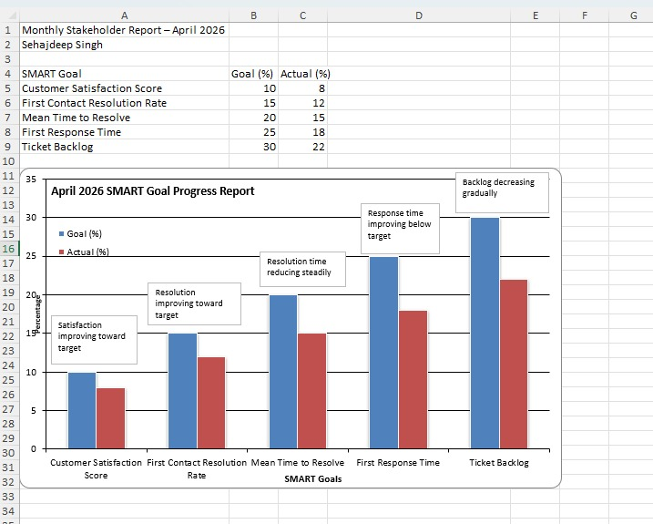

Help Desk Operations Plan Overview
Introduction
- Name: Sehajdeep Singh
- Role: Help Desk Supervisor
- Fiscal year operations plan overview
- Internal help desk operations plan
- Service improvement focus
- User productivity focus
Reason for Plan
- Guide fiscal year help desk operations
- Improve service quality
- Increase user productivity
- Measure service performance
- Support organizational technology needs
Mission
- Deliver reliable help desk support improving user productivity daily
Vision
- Trusted help desk enabling fast reliable technology support organizationwide
Goal 1
- Increase first contact resolution rate 15% by December 2026
- User benefit: Faster issue resolution improves user productivity
Goal 2
- Decrease average ticket resolution time 20% by November 2026
- User benefit: Reduced downtime increases employee productivity
Goal 3
- Increase user satisfaction score 10% by October 2026
- User benefit: Positive support experience improves employee confidence
Goal 4
- Decrease ticket backlog 25% by September 2026
- User benefit: Faster support response improves workflow continuity
Goal 5
- Increase knowledge base article usage 30% by August 2026
- User benefit: Self service access speeds problem resolution

Feedback
- Feedback welcome improving help desk operations plan
- Email: sin18410@sheridancollege.ca
- Phone: 4374607097